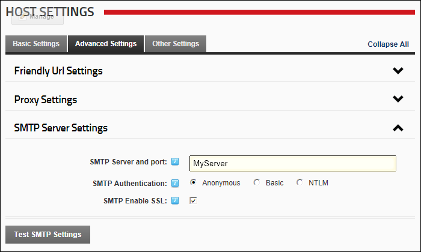

Setting the SMTP Server and Port
How to set the SMTP Server address and an alternate port for new sites. The SMTP (Simple Mail Transfer Protocol) server is the mail server which sends outgoing mail.
- Navigate to Host >
 Host Settings.
Host Settings.
- Select the Advanced Settings tab.
- Expand the SMTP Server Settings section.
- In the SMTP Server and port text box, enter one of the following options:
- Enter the SMTP Server address. E.g. mail.awesomecycles.biz
- To use default port number 25, enter the SMTP server name. E.g. smtp.awesomecyclesmail.biz
- To specify an alternate port, enter the SMTP server name followed by a colon and the port number. E.g. smtp.awesomecyclesmail.com:587
- At SMTP Authentication, select from the following options:
- Anonymous: Username and password are not required to send outgoing mail. This is the default option.
- Basic: Select for basic username and password authentication:
- In the SMTP Username text box, enter a SMTP Username if required.
- In the SMTP Password text box, enter a SMTP Password if required.
- NTLM: Select to use NT LAN Manager authentication.
- In the SMTP Enable SSL, select from the following options:
- Mark
 the check box to enable SSL.
the check box to enable SSL. - Unmark
 the check box to disable SSL.
the check box to disable SSL.

-
Click the Update button.
Related Topics:
-
See "Sending Emails without the SMTP Server"
-
See "Testing Outgoing Email Settings"